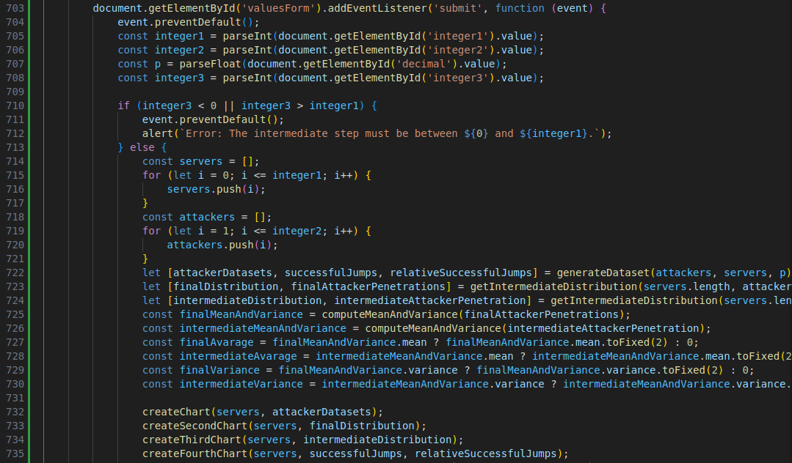

Homework 2
Theory
The Welford recursion
The Welford algorithm is a numerically stable method to compute the mean and consequently the variance in a single pass over a dataset.
Mean Calculation Recursion
Suppose we have a sequence of data points \( x_1, x_2, \dots, x_n \). Let:- \( \mu_n \) be the mean after \( n \) data points,
- \( \mu_{n-1} \) be the mean after \(n - 1\) data points.
Variance Calculation Recursion
Next, it is necessary to compute the variance. Let:- \( s_n^2 \) be the variance after \(n\) data points.
Let \( M_n \) be the sum of squares of differences from the mean up to the \(n\)-th data point: \[ M_n = M_{n-1} + (x_n - \mu_n)(x_n - \mu_{n-1}) \] Using this, For 2 ≤ k ≤ n, the \(n^{th} \) estimate of the variance can be updated with: \[ s_n^2 = \frac{M_n}{n} \] This is the recursive update for the variance using the difference between the new data point and the mean values.
Practical
Euler–Maruyama simulator refinement
Refine you Euler–Maruyama simulator to approximate numerical solutions of stochastic differential
equations (SDE), by adding the following variants to the existing framework:
- Jumps -1 +1 with prob. p [random walk]
- Absolute and relative frequency trajectories
- Final distribution and intermediate distributions (at one internal time/step selectable from the gui), with mean and variance (make it all parametric so that one unique interface will handle it all).
Please fill the forms below to generate the chart
Research
Below my personal notes about the behavior of mean and variance wrt to time.
Mean and Variance Behavior
As time goes by, the average number of successes stabilizes after some period of fluctuation. That
denotes that with an increase in attempts such as numbers of attackers or servers, the system approaches
an equilibrium that reflects the expected probability of success.
In general, variance represents the dispersion of results. In this type of model, the variance may
increase initially and then stabilise. However, in the case of processes such as random walk, variance
tends to go up over a period of time, reflecting the cumulative nature of the events. That is, even if
the mean stabilises, fluctuations in the number of successes may continue to be large, suggesting
significant inherent variability.
Absolute and Relative Frequency
The absolute frequency distribution shows the total number of hits and tends to be more erratic,
especially at the beginning. This may be due to the small number of events, which leads to greater
variability. As the number of attempts increases, this distribution stabilises, but remains susceptible
to significant variations.
In contrast, relative frequency provides a normalised view of successes by relating the number of
successes to the total number of attempts. This approach tends to smooth out fluctuations and, as
attempts increase, the relative frequency approaches the expected value, showing a more regular and
predictable behaviour.
Distribution Differences
The main difference between the two distributions lies in their response to the variability of events. Absolute frequency is more prone to significant fluctuations, while relative frequency offers a more stable representation of the phenomenon. This makes the relative frequency useful for understanding the general behaviour of the system, highlighting how close the results are to the expected expectations.
Code Explanation
Create Charts
As for the first homework, createChart() function is responsible for creating the first chart and
createSecondChart() function creates the second chart.
In this homework createThirdChart() is introduced to show how many attackers have succeeded in
penetrating a certain number of servers for an intermediate step.
Generate Data
As for the first homework, this function simulates the attack process, with few modifications.
For each attacker, an attack against a list of servers is simulated and a calculation is made of how many
servers it manages to penetrate.
For each server, a random value between 0 and 1 is generated using Math.random(). If this value is less than
the probability of success (indicated by the user), the attacker succeeds in penetrating that server (jump
+1), otherwise the attacker fails (jump -1).
The results are stored in a ‘dataset’, where each attacker has a line tracking how many servers he has
penetrated as the attack progresses.
In the meanwhile also the number of successful jumps done in each step is saved in an array for the absolute
frequency, and for the relative frequency the latter array is taken and copied to another array by dividing
each element for the total numebr of attempts done in the step (which is the number of attackers).
Compute Mean and Variance
As for the first homework, this function calculates the average number of servers penetrated by all
attackers using recursion.
The idea is to gradually add up the values of servers penetrated by each attacker and update the average
step by step using the following formula: \[ \mu_n = \mu_{n-1} + \frac{x_n - \mu_{n-1}}{n} \]
In this homework this funcion has been updated to calculate the variance in the same way using the following formula: \[ M_n = M_{n-1} + (x_n - \mu_n)(x_n - \mu_{n-1}) \]
Compute Distribution
This function calculates how many attackers have succeeded in penetrating a certain number of servers for an
intermediate step in order to show the intermediate (and/or final) distribution.
It also calculates the number of penetrated and failed to penetrate systems for each attacker, which is then
used to calculate mean and variance
HTML form to get all together
As for the first homework, when the user submits the form, the values entered for the number of servers
(integer1), the number of
attackers (integer2), the probability of success (p) and the intermidiate step (integer3) are
collected.
These values are used to generate the attack data, compute all the distribution, mean, variance and
frequencies in order to create or update the graphs.
After the graphs have been created, the value of the mean and variance for both the distribution are
shown.
